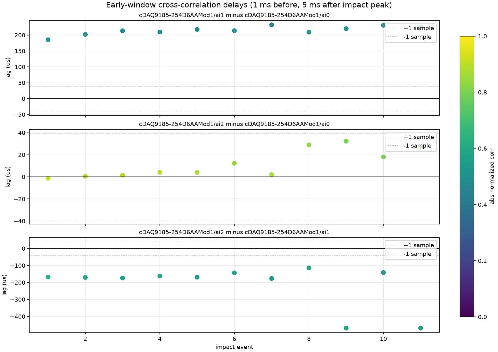
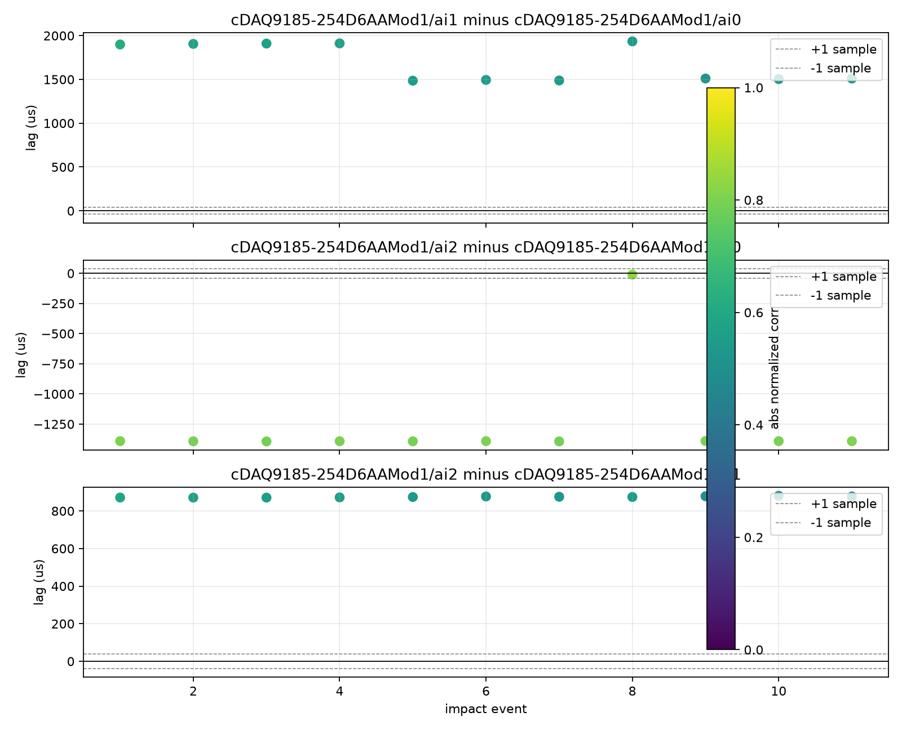
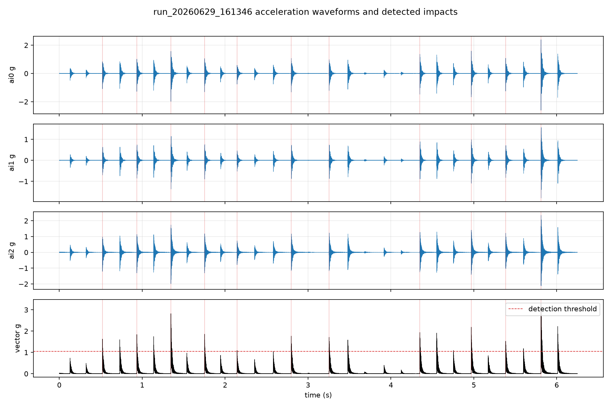

run_20260629_161346 振动通道同步误差分析
结论先说
本次敲击试验可以用于观察三路传感器对同一机械冲击的相对响应，但它不能直接等价为 DAQ 纯通道同步误差。 因为传感器放在试件不同位置或不同方向时，互相关得到的时延同时包含机械波传播、结构模态、传感器安装和极性差异。
在更适合做同步判断的“早期短窗”内，ai0 与 ai2 的互相关质量较高，平均绝对相关系数为 0.857，
中位时差为 4.1 us，全部 11 次强敲击结果都落在一个采样周期 39.06 us 以内。可以判定 ai0 与 ai2
在当前数据里没有观察到超过 1 个采样点的相对采集时差。
ai1 与另外两路的相关性较低，早期短窗下 ai1-ai0 的表观延时约 214 us，且长窗互相关会跳到毫秒级延时。
这更像是试件传播路径、安装方向或局部模态导致的响应相位差，不应解释为 NI 9234 通道不同步。
因此，本次数据对“三通道采集硬同步误差”的结论是：ai0-ai2 可判定为 1 sample 内；包含 ai1 的三通道整体同步误差仍需改进试验后再判定。
数据概况
| 项目 | 数值 | 说明 |
|---|---|---|
| 采样率 | 25,600 Hz | 采样周期 39.0625 us；单纯基于采样点的原始时间分辨率为 1 sample。 |
| 振动通道 | cDAQ9185-254D6AAMod1/ai0、ai1、ai2 | 同一 NI 9234 模块内三通道。 |
| 记录长度 | 160,000 samples，6.25 s | 6 个完整 1 s segment，加 1 个 0.25 s partial segment。 |
| 强敲击事件 | 11 次 | 由三通道矢量幅值的鲁棒阈值自动筛选；低幅小敲击未纳入统计。 |
| 判断基准 | 1 sample = 39.06 us | 亚采样插值只用于辅助估计，不应把几微秒数字理解为真实硬件精度。 |
分析方法
1. 敲击事件检测
对三路加速度去中位值后计算矢量幅值：
sqrt(ai0^2 + ai1^2 + ai2^2)。阈值取
max(median + 12 * 1.4826 * MAD, P99.5)，并设置 0.25 s 最小事件间隔，最终得到 11 个强敲击事件。
2. 互相关时延估计
每次敲击以矢量峰值为中心，取早期短窗：峰值前 1 ms、峰值后 5 ms。对每个通道对进行零均值归一化互相关， 搜索范围为 ±0.5 ms。时延符号定义为：正值表示目标通道相对参考通道滞后。
选择早期短窗作为主结果，是为了尽量使用冲击刚到达时的波形，减少后续振铃、反射和结构模态对相关峰的干扰。 同时保留长窗互相关作为敏感性检查，用来判断延时结果是否被模态周期锁定。
主结果：早期短窗互相关
| 通道对 | 中位时差 | 平均时差 | 标准差 | 平均绝对相关系数 | 判定 |
|---|---|---|---|---|---|
ai1 - ai0 |
+213.8 us | +214.6 us | 13.4 us | 0.505 | 低可信：相关性偏低，主要反映机械响应差异。 |
ai2 - ai0 |
+4.1 us | +11.7 us | 12.6 us | 0.857 | 通过：全部事件落在 ±1 sample 内。 |
ai2 - ai1 |
-168.8 us | -214.2 us | 127.2 us | 0.572 | 低可信：包含低相关和边界峰，不能作为采集同步误差。 |
注：如果把 39.06 us 作为 1 个采样点，则 ai2-ai0 的中位时差约 0.10 sample，平均约 0.30 sample；
ai1-ai0 的表观时差约 5.5 samples。

长窗互相关的风险
采用更长的 40 ms 振铃窗口时，部分通道对的互相关峰会跳到 0.8 ms 到 1.9 ms 的位置。 这说明敲击后的振铃、反射和结构模态会主导相关峰，而不是采集卡通道的同步误差。 因此，同步测试不要直接拿完整衰减振铃段做互相关；应尽量使用冲击到达早期短窗，并结合相关系数筛选有效事件。

性能指标判断
| 指标 | 建议判据 | 本次结果 |
|---|---|---|
| 采样分辨率 | 25.6 kHz 下 1 sample = 39.06 us。 | 当前数据的硬判定粒度应按 39.06 us 解释。 |
| 高可信通道对同步 | 早期短窗绝对相关系数大于 0.8，且绝对时差小于 1 sample。 | ai0-ai2 满足，判定为 sample-level 同步。 |
| 三通道整体同步 | 所有通道对都应高相关，并且时差稳定在 1 sample 内。 | ai1 相关性低且表观延时为百微秒到毫秒级，当前试验不满足纯同步误差判定条件。 |
| 当前可报告水平 | 区分“硬件同步”和“机械响应时差”。 | 可报告 ai0-ai2 未见超过 1 sample 的相对时差；三通道硬同步需要补充更受控的试验。 |
波形和事件检测
下图展示三通道完整波形、矢量幅值和被纳入统计的 11 次强敲击事件。 可以看到记录中还存在一些较小敲击或反射响应，未超过阈值，因此未进入同步误差统计。

下一步建议
- 如果目标是验证采集硬同步，建议把三个传感器尽量共点、同方向安装在刚性小块上，或用同一个校准振动源/电信号分配到多通道，减少机械传播差异。
- 如果目标是研究试件传播路径，则当前百微秒级到毫秒级表观时差是有意义的响应时差，但应记录传感器间距、敲击点位置和方向。
- 同步误差报告建议同时给出时差和互相关系数；低于 0.7 的相关结果不要用于硬同步判定。
- 后续采集时应在通道元数据中填写传感器编号、测点、方向、安装方式，避免无法解释
ai1这类响应差异。
归档文件
| 文件 | 用途 |
|---|---|
| assets/sync_analysis_results.json | 主分析完整数值结果。 |
| assets/sync_event_delays.csv | 逐敲击、逐通道对的互相关延时表。 |
| assets/sensitivity_probe.json | 不同窗口长度的敏感性检查结果。 |
| assets/waveform_detected_impacts.png | 波形和事件检测图。 |
| assets/early_window_delay_by_event.png | 早期短窗互相关主结果图。 |
| assets/delay_by_event.png | 长窗互相关敏感性图。 |
{kind=link}
{kind=link}
{kind=link}
临时分析代码位于系统临时目录 C:\Users\sgh25\AppData\Local\Temp\nidata_sync_run_20260629_161346，
未放入仓库。